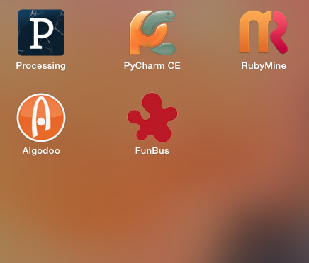
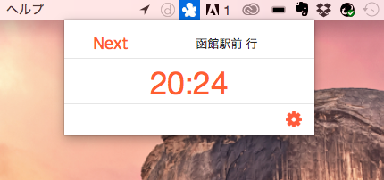

【6/26】FunBus.appのBeta1.0版を公開
はこだて未来大学のMacユーザ向けアプリを開発しました。←(ターゲットがとても狭い)
一体何のアプリを作ったんだ。ということですが...
>>FunBus.app
というものを作りました。ダウンロードはコチラから


Cocosで開発した、デスクトップ常駐OS Xアプリケーションです。
FunBus.appという名前の通り、はこだて未来大学から出発する直近のバス情報を表示してくれます。
デスクトップ常駐アプリなので、バス時間が気になったときにすぐ開けます。
Beta1.0版ということもあり、限られた機能のみの提供です。
需要がある(個人的に便利)であれば、頑張ってバージョンアップしようと思います。
未実装機能
| 赤川方面のバス情報 |
| 休日ダイヤ情報 |
| バスの詳細情報 |
追伸:6/26の情報表現入門の時間に頑張って書いたよ\(^o^)/